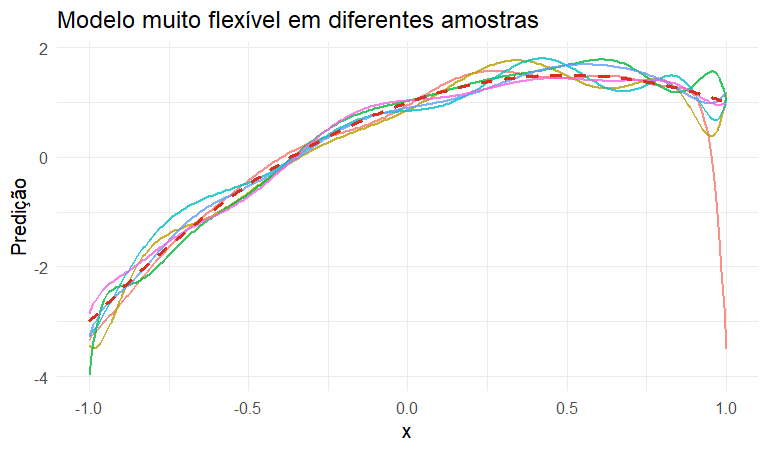

Segundo a formulação clássica de Mitchell, um sistema aprende a partir de uma experiência \(E\), para uma tarefa \(T\), segundo uma medida de desempenho \(P\), quando seu desempenho melhora com a experiência.
Tarefa (\(T\))
Prever o preço de um imóvel.
Experiência (\(E\))
Histórico de imóveis observados.
Desempenho (\(P\))
RMSE em novas observações.
Diferentes tipos de aprendizado
Tipo
Informação disponível
Exemplos
Supervisionado
\((X,Y)\)
regressão, classificação
Não supervisionado
\(X\)
clustering, PCA
Por reforço
estado, ação e recompensa
decisões sequenciais
Nesta Parte I, estudaremos aprendizado supervisionado com resposta quantitativa.
Aprendizado supervisionado
Notação
Dispomos de observações
\[
(X_1,Y_1),\ldots,(X_n,Y_n),
\]
em que
\(Y\in\mathbb R\) é a variável resposta;
\(X=(X_1,\ldots,X_p)\) representa as variáveis explicativas.
Queremos aprender uma função
\[
\hat g:\mathbb R^p\rightarrow\mathbb R
\]
A função de regressão
O alvo fundamental em regressão é
\[
\boxed{r(x)=\mathbb E[Y\mid X=x]}
\]
Ela representa o valor médio esperado da resposta para observações com covariáveis iguais a \(x\).
Formulação estatística
Uma representação comum é
\[
Y=r(X)+\varepsilon,
\]
com
\[
\mathbb E(\varepsilon\mid X)=0
\]
A função \(r\) é desconhecida. A partir dos dados, construímos
\[
\boxed{\hat g(x)\approx r(x)}
\]
Exemplo: PIB e expectativa de vida
Considere
\(X\): PIB per capita;
\(Y\): expectativa de vida.
Queremos estimar
\[
r(x)=\mathbb E[Y\mid X=x]
\]
Qual é a expectativa de vida média esperada para um país com PIB per capita igual a \(x\)?
Como a complexidade do modelo afeta seu erro de generalização?
Complexidade, viés, variância e tuning
Por que modelos muito flexíveis são instáveis?
Imagine várias amostras independentes provenientes da mesma população.
Um modelo muito flexível pode produzir curvas bastante diferentes em cada amostra.
Essa sensibilidade aos dados é chamada variância.
set.seed(10)# Grade de valores de xgrid_v<-data.frame( x =seq(-1, 1, length.out =300))# Função de regressão verdadeiragrid_v$verdadeiro<-1+2*grid_v$x-2*grid_v$x^2# Ajustes obtidos em 6 amostras diferentescurvas<-do.call(rbind,lapply(1:6, function(b){xx<-sort(runif(70, -1, 1))yy<-1+2*xx-2*xx^2+rnorm(70, 0, .35)fit<-lm(yy~poly(xx, 12, raw =TRUE))data.frame( x =grid_v$x, pred =predict(fit, newdata =data.frame(xx =grid_v$x)), amostra =factor(b))}))# Gráficoggplot(curvas,aes(x, pred, group =amostra, color =amostra))+geom_line( linewidth =.9, alpha =.8)+geom_line( data =grid_v,aes(x, verdadeiro), inherit.aes =FALSE, color ="#D7301F", linetype ="dashed", linewidth =1.3)+theme_minimal(base_size =15)+theme( legend.position ="none")+labs( x ="x", y ="Predição", title ="Modelo muito flexível em diferentes amostras")

O outro extremo: modelos simples
Modelos muito simples podem variar pouco entre amostras, mas errar sistematicamente a forma de \(r(x)\).
Esse erro sistemático é chamado viés.
set.seed(11)grid_b<-data.frame(x=seq(-1,1,length.out=300))retas<-do.call(rbind,lapply(1:6,function(b){xx<-runif(70,-1,1); yy<-1+2*xx-2*xx^2+rnorm(70,0,.35)fit<-lm(yy~xx)data.frame(x=grid_b$x,pred=predict(fit,newdata=data.frame(xx=grid_b$x)),amostra=factor(b))}))ggplot(retas,aes(x,pred,group=amostra))+geom_line(color="#2C7FB8",linewidth=.8,alpha=.65)+stat_function(fun=function(x)1+2*x-2*x^2,color="#D7301F",linewidth=1.4,lty=2)+theme_minimal(base_size=15)+labs(x="x",y="Predição",title="Modelo simples: baixa variância, mas viés sistemático")